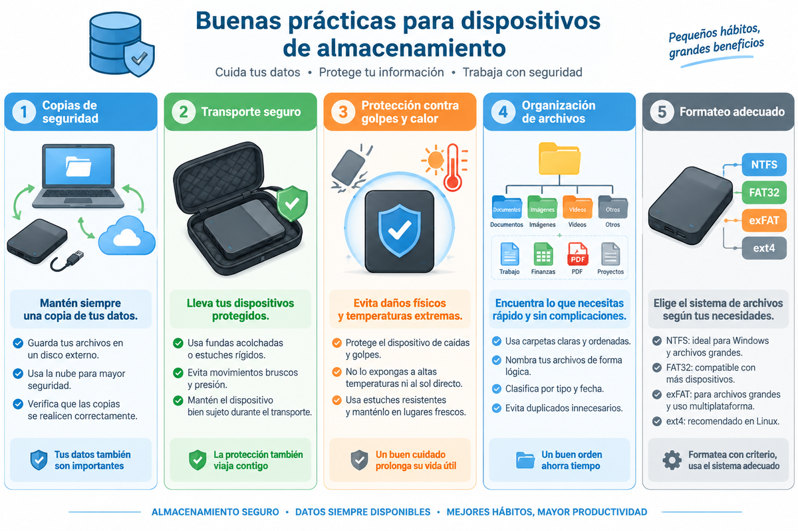

Best practices to protect and extend the lifespan of your storage devices
No storage device lasts forever. Whether it is a mechanical HDD or a modern SSD, any device can fail unexpectedly due to a manufacturing defect, malware, or an electrical problem.
The golden rule is to keep at least one backup copy of important files on a separate storage device or in the cloud. Automating regular backups helps prevent unnecessary data loss.
When transporting external mechanical hard drives (HDDs), make sure the computer is completely powered off before disconnecting them, since the internal heads move at high speed over the platters.
Use padded cases to protect devices from excessive vibration. SSDs and flash memory devices, since they have no moving parts, are much less vulnerable to mechanical damage during transport.
Magnetic hard drives are extremely sensitive to impacts while operating. A sudden shock may cause the read/write head to scratch the platter surface, permanently destroying stored data.
Likewise, storage devices should not be exposed to extreme temperatures or direct heat sources. It is also important to ensure that the computer's ventilation openings remain unobstructed to allow proper cooling.
A well-organized folder structure not only makes information easier to find but can also improve the logical performance of the file system by reducing fragmentation on mechanical drives.
It is recommended to periodically remove temporary or duplicate files that unnecessarily consume available storage capacity.
Choosing the correct file system (such as NTFS, FAT32, exFAT, or ext4) according to the intended use of the drive ensures compatibility across different operating systems and optimizes storage efficiency.
Remember to perform a secure erase or full format only when strictly necessary, making sure that all valuable information has been safely backed up beforehand.
